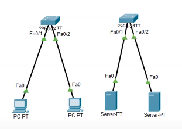

Test jezelf
- Welke twee taken neemt de datalink laag op zich?
- Afspraken omtrent een transmissiemedium zoals koperen kabels, glasvezel of draadloze signalen, en adressering in een lokaal netwerk
- Adressering in een lokaal netwerk, en controle van de juistheid van de gegevens in het frame
- Adressering in een globaal netwerk, en controle van de juistheid van de gegevens in het frame
- Afspraken omtrent een transmissiemedium zoals koperen kabels, glasvezel of draadloze signalen, en adressering in een globaal netwerk
Het transmissiemedium is de fysieke laag en adressering over netwerken heen is de netwerk laag. Wat overblijft voor de datalink laag, is adresseren binnen het lokale netwerk en nagaan of het frame onderweg niet beschadigd is. - Hoe ziet een MAC adres er uit?
- 192.168.0.1
- 80-32-53-43-31-5D
- www.hogent.be
- Welke bewering over een MAC adres is niet waar?
- Het wordt door de fabrikant van de netwerkkaart vastgelegd
- In een MAC adres zit geen structuur die iets zegt over de locatie van een host in een netwerk
- Een MAC adres wordt gebruikt binnen een lokaal netwerk
- Een MAC adres moet uniek zijn in het lokaal netwerk
- Een hub kan overweg met MAC adressen
Een hub werkt op de fysieke laag en leest geen enkel adres: hij zet elk binnenkomend signaal op al zijn poorten. Het is de switch die naar het MAC adres kijkt. - Als een computer twee bedrade en één draadloze NIC heeft, hoeveel unieke MAC adressen heeft de computer dan in totaal?
Drie. Het MAC adres hangt aan de netwerkkaart en niet aan de computer, en dat geldt voor een draadloze kaart evengoed als voor een bedrade.
- Vul de lege velden van het frame aan
Van links naar rechts: Destination MAC Address, Source MAC Address, Length / Type en Frame Check Sequence.
| 7 bytes | 1 byte | 6 bytes | 6 bytes | 2 bytes | 46 tot 1500 bytes | 4 bytes |
|---|---|---|---|---|---|---|
| Preamble | Start Frame Delimiter | Data |
- Waarvoor staat de afkorting LAN?
Local Area Network.
- Welke bewering is waar?
- Een LAN is een verzameling van meerdere WANs
- Een WAN is een verzameling van meerdere LANs
- Het HOGENT netwerk is een …
- LAN
- WAN
Hoe groot het gebied is, doet er niet toe: een LAN is het netwerk van één organisatie op één plaats, en daarin verschilt de hogeschool niet van je netwerk thuis. - Het internet is een …
- LAN
- WAN
- Het apparaat dat je gebruikt om met een ander netwerk te communiceren is een…
- Hub
- Switch
- Router
- Als je meerdere lokale netwerken wil maken met verschillende toegangsrechten voor de gebruikers op dezelfde hardware, dan kan je gebruik maken van:
- cat7
- VLAN
- 802.11 n
- OFDMA
- Wat gebeurt er als een switch een frame ontvangt waarvan het destination MAC adres niet voorkomt in zijn MAC adreslijst?
Hij gedraagt zich even als een hub en zet het frame op al zijn poorten. Dat heet flooden. Zodra de ontvanger antwoordt, ziet de switch diens MAC adres als source op een bepaalde poort en vult hij zijn MAC address table aan; het volgende frame gaat wel naar die ene poort.
- Door hoeveel VLANs zou je deze opstelling kunnen vervangen?

- 1
- 2
- 4
De twee switches dragen twee gescheiden netwerken, en dat zijn er dus twee. Één switch met twee VLANs doet hetzelfde werk met de helft van de hardware. - Waarvoor staat de afkorting QOS?
Quality Of Service.
- Welk QOS niveau zou je instellen als je een industrieel netwerk gebruikt dat een kritisch proces aanstuurt?
- QOS 0 of 1
- QOS 5 of 6
- Waarom wordt het ARP protocol gebruikt?
- Zodat een computer binnen een lokaal netwerk het IP adres te weten komt van de ontvanger op basis van de ontvanger zijn MAC adres
- Zodat een computer binnen een lokaal netwerk het MAC adres te weten komt van de ontvanger op basis van de ontvanger zijn IP adres
- Om verschillende VLANs van elkaar te scheiden met behulp van destination en source MAC adres
- Om prioritair netwerkverkeer altijd voorrang te geven, zelfs al is er sprake van een zeer hoge belasting van het netwerk
- Op welke twee frequentiebanden zendt een dual band router uit?
- 100 Mbps en 1000 Mbps
- cat5 en cat6
- 2.4 GHz en 5 GHz
- Welke is de meest performante standaard?
- 802.11 ac
- 802.11 ax
- 802.11 b
- 802.11 be
- 802.11 g
- 802.11 n
- Welk principe zie je afgebeeld in deze figuur?

- Ethernet
- MIMO
- Channel bonding
- OFDMA
Onder de rij kanalen van 20 MHz staat een rij van 40 MHz, waarin telkens twee buren tot één kanaal samengenomen zijn. Dubbele bandbreedte, en daarmee dubbele snelheid. - Aan welke voorwaarden voldoet een goede PSK?
Lang, en niet te raden. Tegen AES zelf is geen aanval bekend, dus wat een aanvaller overhoudt, is je sleutel uitproberen. Een woord uit het woordenboek, een naam of een geboortedatum houdt dat niet tegen, en de sleutel die de fabrikant op de router zette, verander je.
- Welke security mode(s) en encryptie standaard zou je instellen op een draadloze router?
WPA3 als je router en je toestellen het aankunnen, anders WPA2. In beide gevallen AES als encryptie, nooit TKIP: dat is de oude standaard van WPA en ze is intussen afgeschreven.